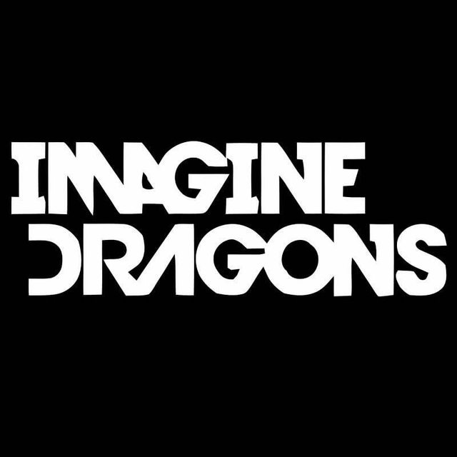

July 30 2023 | Skopje, Macedonia | Arena Boris Trajkovski TICKETS
Imagine Dragons
Formed in 2009, Imagine Dragons first revealed their limitless passion and genre-bending sensibilities with a series of independently released EPs that quickly earned a grassroots following. After hitmaking producer Alex Da Kid signed them to KIDinaKORNER/Interscope, the band made their major-label debut with Continued Silence, a 2012 EP featuring the double-platinum breakthrough single “It’s Time.”July 30 2023 | Skopje, Macedonia | Arena Boris Trajkovski TICKETS

HC Vardar vs HC Pelister
Both HC Vardar and HC Pelister represent the handball scene in North Macedonia and contribute to the popularity and growth of the sport in the country. They regularly compete against each other and other teams in domestic handball leagues and tournaments.Avgust 12 2023 | Skopje, Macedonia | Arena Boris Trajkovski TICKETS

Balkan Folklore Festival
Balkan Folklore Festival is an international festival of folk songs and dances held in Ohrid from 6th to 11th of July. The festival has a long tradition, which means it was established in 1962. It is a member of two UNESCO’s associations, CIOFF or the International Council of Organizations of Folklore Festivals and Folk Arts and IOFA or International Organization of Folk Art. At the beginning was just a festival of non-professional Folk Ensembles but since 1967, the concept of the festival has changed.July 6 to 11 2023 | Ohrid, Macedonia | Ohrid TICKETS

SKOPJE CALLING
We believe that there is no need to give epithets for each of the artists who are in the title (in the announcement of this event), as well as the need to explain: who Nina Kraviz is and what she means at the moment on the world music scene as the ultimate headliner and what they mean Laibach, Konstrakta & Zemja Gruva, Buč Kesidi and Nipplepeople at the moment, and in general... because we believe that everything is clear to those for whom this festival edition of Skopje Calling 2023 is intended.July 07 2023 | Skopje, Macedonia | Stadion ARM TICKETS

Ohrid CALLING
We believe that there is no need to give epithets for each of the artists who are in the title (in the announcement of this event), as well as the need to explain: who Nina Kraviz is and what she means at the moment on the world music scene as the ultimate headliner and what they mean Laibach, Konstrakta & Zemja Gruva, Buč Kesidi and Nipplepeople at the moment, and in general... because we believe that everything is clear to those for whom this festival edition of Skopje Calling 2023 is intended.July 31 2023 | Ohrid, Macedonia | Kasarni Ohrid TICKETS

CRVENA JABUKA
From the tropical house and dance-pop sounds of the chart - topping hitmaker Jonas Blue with his first appearance in the Balkans, to the dynamic and infectious productions of Morten who is at the peak of his career, to the larger-than-life performances of Steve Aoki, and innovative and infectious energy of your favorite Salvatore Ganacci who first played the festival in 2018 as an anonymous and is now a premium DJ headlining the biggest festivals worldwide!Mart 25 2023 | Skopje, Macedonia | Makedonska Filharmonija TICKETS